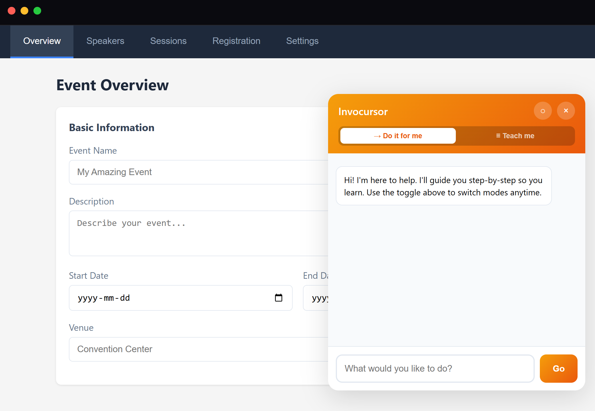
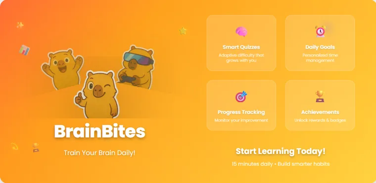

I get software working inside the workflows people already use.
I'm Nihith (Nick) Mekala, in Hamilton, Ontario. I built Invocursor, an AI copilot that runs inside other companies' web apps and is in paid production use at Attendify. Day to day, I keep a growing family clinic's front office and EMR running. I'm open to implementation, solutions and integrations roles.
A simplified replay of how Invocursor handles a request. The model writes a plan, and plain code checks that every target is on the page before anything moves.
Invocursor
Founder and engineer Dec 2025 – Present
Invocursor is an AI copilot that lives inside someone else's product. A user types what they want in plain English. In “Do it for me” mode, an animated cursor does the task in the real interface. In “Teach me” mode, it walks them through it step by step. It installs with a single script tag.
I started it in December 2025 and incorporated it in Ontario in March 2026. I'm the only person on it, so I do the engineering, the customer setup, the documentation and the sales.
Customer
Attendify, a Canadian childcare management platform
Scope
53 workflows, with 880+ interface elements mapped
Status
Taken from pilot to paid production use, with ongoing support
Stack
JavaScript, Node.js and Express, OpenAI API (GPT-4o-mini), Supabase and PostgreSQL, ExcelJS

The assistant panel inside a sample app, with both modes.
How a request runs
Install. The customer adds one script tag to their app.
Map. A configuration map ties plain-language tasks to the real elements on each page. Synonyms resolve too, so “dark mode”, “night mode” and “black theme” all land on the same action.
Plan. The model returns a structured, typed JSON action plan instead of free text.
Check. A separate, deterministic engine confirms every target element exists on the live page before it acts. If one is missing, it stops and explains why instead of guessing.
Report. Every interaction is logged to PostgreSQL, and the customer gets automated multi-sheet Excel usage reports.
What I built around it
A multi-tenant PostgreSQL schema for plans, users, API keys and usage analytics, with API key authentication, rate limiting and CORS configuration.
The integration and onboarding documentation for the Attendify rollout.
The design and first part of an auto-configuration generator that scans a customer's app, finds interactive elements and proposes mappings for a person to review.
Taking it to customers
I contacted 90 decision-makers at 30 Canadian vertical SaaS companies. I wrote the pitch decks, one-pager, pilot proposal and sales playbook, and set pricing from what it actually costs to run the AI. A Communitech growth coach advises me.
What it taught me
Make the contract between systems strict. The model returns typed JSON, so the engine never has to guess what it meant.
Assume the other system will change. Customers ship new screens. The engine checks the live page every time instead of trusting the map.
Fail loudly, not silently. When a target is missing, it stops and says so. A clear stop beats a wrong click.
Customers need to see it working. Logs and usage reports show what people asked for and what happened.
I joined a brand-new family practice and kept the front office running as daily volume grew from about 5–10 patients to about 50. I'm the first point of contact when Juno EMR or other software has a problem, and I guide physicians and staff through the system's workflows. I set up the office's procedures for document tracking, filing and monthly reporting, and I handle referrals, results, intake, vitals and venipuncture.
Founder and Engineer
Dec 2025 – Present
Invocursor Inc., Hamilton
Built and run an AI onboarding copilot that's in paid production use at Attendify. Mapped 53 workflows and 880+ interface elements, wrote the integration documentation and support the account. More above.
Hub Facility Coordinator
Feb 2024 – Dec 2024
McMaster Students Union, Hamilton
The main point of contact for bookings, logistics and day-to-day support for 50+ student programs a year. I cut recurring support requests by 15% by writing FAQs, process maps and self-service troubleshooting guides, and worked with IT to fix data discrepancies in SharePoint and Excel trackers.
Other builds

CaBBy's Brain Bites
An Android app on Google Play that pairs screen-time tracking with quizzes: answer questions, earn time back. I built it with React Native, Kotlin and Firebase, and nearly 100 beta testers tried it. The hard parts were native Android work: a foreground service that keeps tracking after the app is closed, and a midnight rollover that turns unused time into points.
Python pipelines that analyze NK-cell cytotoxicity microscopy data (ND2 files) in a McMaster research lab. I also got hands-on exposure to CellProfiler and droplet microfluidics.
Data analysis
Three studies, each answering one question with public data. Select a chart to enlarge it.
Do traffic collisions cause subway delays in Toronto?
No sign of it. Collisions build through the day and peak in the mid-afternoon, while subway delays peak late at night, around 10 PM. Month by month, delays stay fairly flat while collisions rise and fall. The delays look driven by the subway's own operations, not by traffic above ground.
How do casual riders use bike-share differently from members?
Casual rides average 24.65 minutes, about twice the members' 12.67. Members ride most in the middle of the week, while casual riders peak on Saturdays. That reads as leisure versus commuting, which calls for a different membership pitch to each group.
A dollar put into GME or MSTR in 2020 was worth over $20 by 2025, after enormous swings. A dollar in AMC fell to about 9 cents. Walmart and gold climbed slowly and steadily. The first two charts are naive on purpose, to show how raw prices and averages across asset classes mislead, next to the charts that actually answer the question.
Tableau
Skills and education
Build
JavaScript, Node.js and Express
REST APIs and JSON
OpenAI API: structured outputs and output validation
PostgreSQL, Supabase and schema design
DOM and browser scripting
Python (pandas)
React Native, Kotlin and Firebase
Git, and AI coding tools like Claude Code
Implement and support
Workflow mapping
Technical onboarding
Integration and process documentation
Troubleshooting and issue triage
End-user training
Pilot support
Data
SQL
Excel
Tableau
Usage reporting
Clinical
Juno EMR (OSCAR-based)
Referrals and results management
Intake, vitals and venipuncture
PHIPA
Education
McMaster University BSc (Honours) Life Sciences 2019 – 2023
Certifications
Google Data Analytics
IBM Data Science
SQL for Data Science, UC Davis
Phlebotomy, CIMT College (2026)
Languages
English and Telugu (native)
Hindi (fluent)
Turkish (intermediate)
French (learning)
Contact
If you're hiring for implementation, solutions or integrations work, I'd like to hear from you.